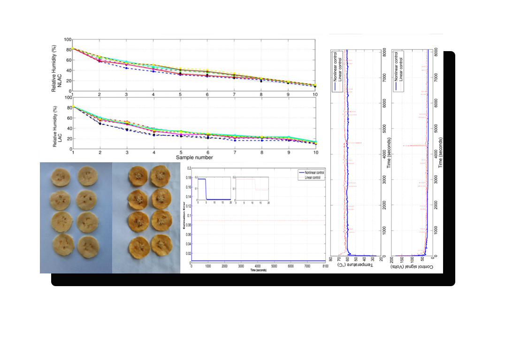
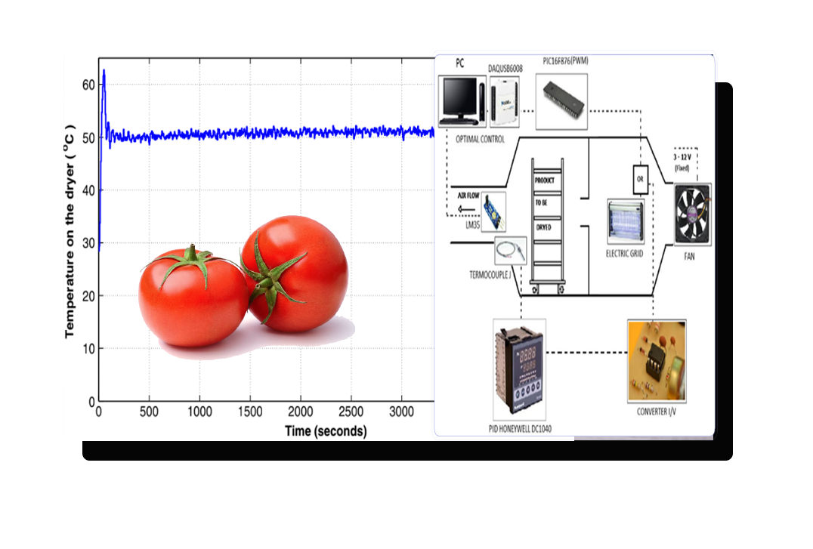
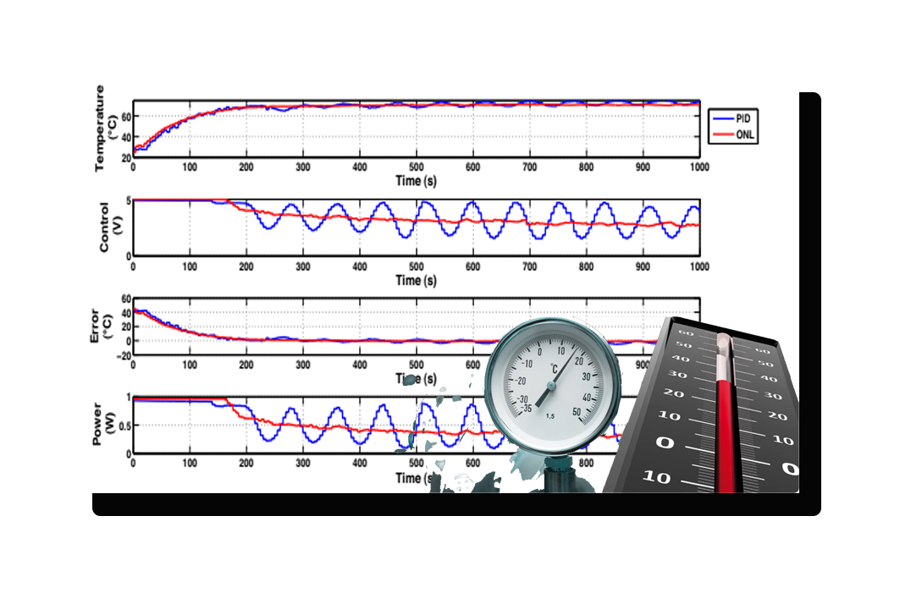
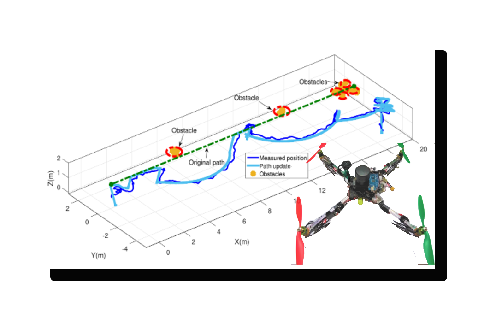
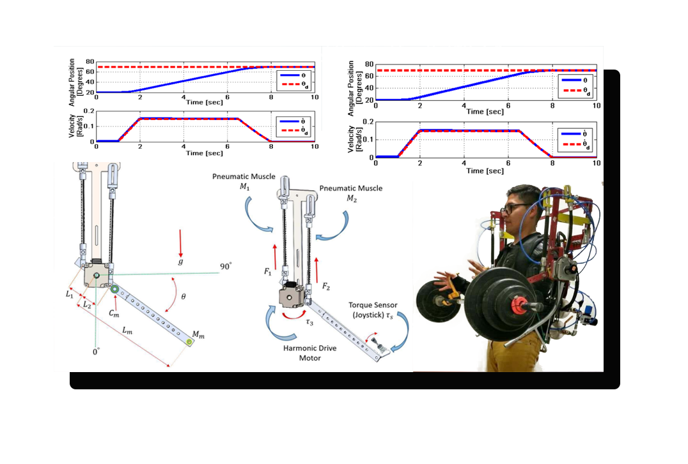
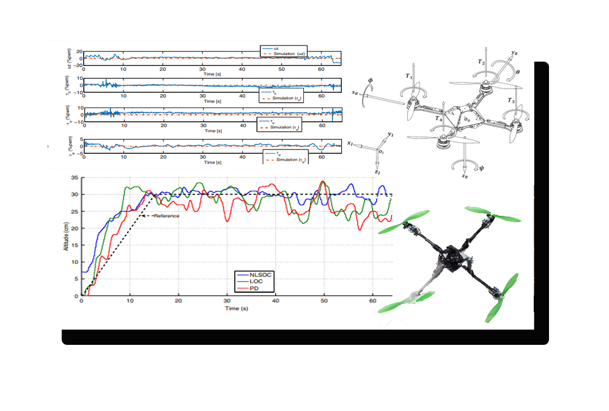
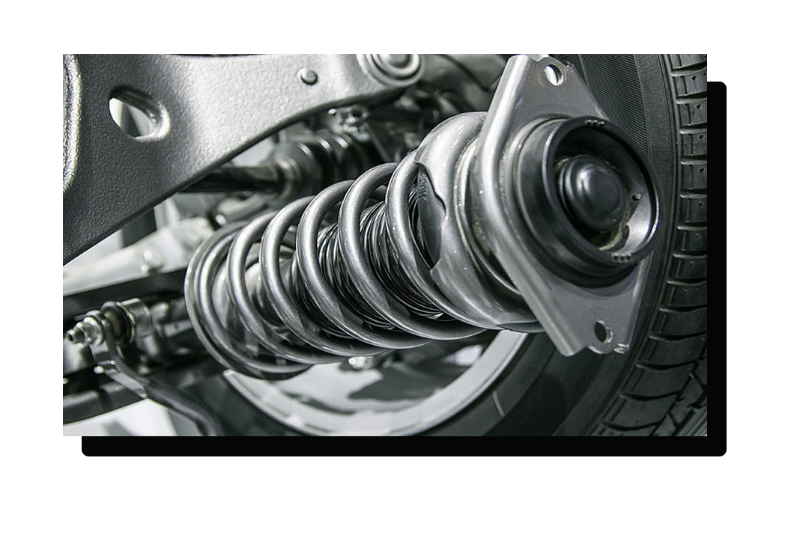

Ejemplos
Sistemas dinámicos
|
Comprenden la mayoría de sistemas que representan en la vida real, como lo pueden ser
En los que se puede aplicar el control óptimo. |
Control Óptimo para el Proceso de Deshidratación del Plátano
|  |
Resumen La contribución presenta el esquema adaptativo del control no lineal óptimo sintetizado a través del enfoque de optimización inversa para regular la temperatura de un proceso de deshidratación de plátanos. La necesidad de aplicar un enfoque adaptativo es evidente cuando la región de operación deseada se restablece con frecuencia debido a cambios en los parámetros del sistema, lo que requiere bajo esta condición un nuevo ajuste de las ganancias del controlador. Entonces, el algoritmo adaptativo propuesto, proporciona una mayor facilidad para ser implementado, estimando los parámetros del sistema |
Control Óptimo para el Análisis de Nutrientes del Jitomate
|
Resumen En este artículo, estudiamos los efectos del control de temperatura en un proceso de deshidratación de rodajas de tomate cuando se consideran dos estrategias de control: controlador PID y control lineal óptimo cuando se considera el retardo de tiempo de entrada inherente. El primer controlador está sintonizado por el método D-partition o y un procedimiento numérico para minimizar un índice de rendimiento cuadrático, el segundo considera un predictor de estado para compensar los efectos de la entrada retrasada. Se cuantifican los ahorros energéticos y las características intrínsecas en las rodajas de tomate (vitamina C, fenoles totales y niveles de licopeno) para concluir las ventajas de los dos controladores en estudio. Palabras clave: Proceso de deshidratación, Ahorro de energía, Retención de nutrientes, Control óptimo, PID industrial |
 |
Control Óptimo para el Temperatura
|  |
Resumen En esta contribución, obtenemos un controlador no lineal para una clase de sistemas de retardo de tiempo no lineales, utilizando el enfoque de optimización inversa. Evitamos la solución de la ecuación tipo Hamilton Jacobi Bellman y la determinación del funcional de Bellman extendiendo el enfoque de optimización inversa para sistemas no lineales sin retardo a sistemas no lineales con retardo de tiempo. Esto se logra mediante la combinación del marco de control de funciones de Lyapunov y los funcionales de Lyapunov-Krasovskii de tipo completo. Se obtienen fórmulas explícitas para un control óptimo. La eficiencia del método propuesto se ilustra a través de resultados experimentales aplicados a un proceso de deshidratación cuyo modelo incluye una parte lineal de estado retardado y una parte no lineal retardada. Para dar evidencia del buen desempeño de la ley de control propuesta, comparación experimental contra un controlador industrial Proporcional Integral Derivativo y un controlador lineal óptimo. Además se presentan pruebas experimentales de robustez. Palabras clave: Optimalidad inversa, Control no lineal óptimo, Sistemas de retardo de tiempo, Controlador PID industrial. |
Carrera espacial
|
Siendo uno de los principales intereses del control optimo ya que nos permite:
|
Robots
|
Aquí entran algunos sistemas electrónicos como pueden ser los helicópteros y cuadricópteros para:
|
Control Óptimo para Cuadricóptero
|  |
Resumen En este trabajo se presenta un método de navegación en ambientes al aire libre cuando hay presencia de árboles en el espacio de trabajo, para detectar los obstáculos se realiza un sensor de escaneo láser con un enfoque geométrico. El seguimiento de la trayectoria del camino encontrado se realiza con un control no lineal subóptimo de horizonte finito en dominio discreto; como se demostró en resultados anteriores, la secuencia no lineal subóptima permite optimizar la energía. Se obtienen resultados experimentales satisfactorios en exteriores utilizando un vehículo de cuatro rotores con sensor GPS. Palabras clave: Prevención de colisiones, planificación de rutas, control no lineal subóptimo, quadrotor. |
Control Óptimo para Exoesqueleto híbrido
|
Resumen En este resumen, se presenta la implementación de un control discreto no lineal subóptimo para optimizar el consumo de energía en un exoesqueleto híbrido para la articulación del codo. El exoesqueleto se utiliza para amplificar la fuerza del usuario y es híbrido en el sentido de que combina dos tipos de actuadores: músculos neumáticos y motores Harmonic Drive, que otorgan potencia y precisión al sistema, respectivamente. El exoesqueleto es autónomo en el sentido energético y es impulsado por aire comprimido y baterías. El control subóptimo se utiliza para aumentar el tiempo de operación del exoesqueleto. Esta ley de control penaliza el consumo de energía, y tiene un efecto directo sobre el tiempo de operación del prototipo. Palabras clave: Incremento de fuerza, exoesqueleto híbrido, control subóptimo. |
 |
Control Óptimo para un Drone
|  |
Resumen En este artículo, se propone una secuencia de control discreta no lineal subóptima para sistemas de control afines discretos no lineales. Usando el enfoque de programación dinámica en el dominio del tiempo discreto, la secuencia de control subóptima se obtiene en cada paso considerando un índice de rendimiento cuadrático de horizonte finito. La estrategia de control propuesta se aplica para mejorar las prestaciones dinámicas y energéticas de un vehículo aéreo no tripulado quadrotor, cuando está sujeto a maniobras o condiciones de vuelo especiales, tales como las fases de despegue y aterrizaje o seguimiento de trayectoria. Para estas tareas se podría requerir convergencia en tiempo finito y buen comportamiento. Realizando un estudio experimental comparativo con otros controladores (controladores lineales óptimos y PD), se demuestra la efectividad del enfoque propuesto. Palabras clave: Discreto control óptimo, actuaciones enérgicas, quadrotor. |
Sistemas Mecánicos
|
Sistema de suspensión de automóviles.
Sistemas amortiguadores de edificios.
|
 |